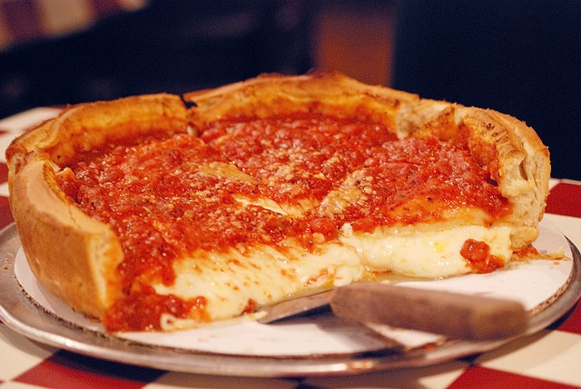

Home
Chicago pizza

Description
Ingredients
- 1 ⅓ cups warm water
- 2 ¼ teaspoons active dry yeast
- ¼ cup olive oil
- ¼ cup melted butter
- 2 teaspoons white sugar
- 1 ½ teaspoons fine salt
- ½ cup cornmeal
- 3 ¾ cups all-purpose flour
- 2 teaspoons olive oil, or as needed, divided
- 4 cups pizza sauce, or to taste
Fillings and Toppings
- 4 ounces sliced provolone cheese
- 8 ounces fresh mozzarella cheese, cubed
- 1 pound spicy Italian sausage, casings removed
- 4 ounces shredded part-skim, low-moisture mozzarella cheese
- 2 ounces Parmigiano-Reggiano cheese
- 1 tablespoon olive oil
Steps
- Make the dough: Pour water into the bowl of a stand mixer fitted with a paddle attachment. Sprinkle
in yeast and let dissolve, about 10 minutes. Add olive oil, melted butter, sugar, salt,
cornmeal, and most of the flour, in that order. Knead, stopping occasionally to scrape down the
sides and adding more flour as needed, until smooth and elastic.
- Transfer dough to a lightly floured work surface. Knead in extra flour if needed. Roll into a ball
and transfer to a bowl greased with 1/2 teaspoon olive oil. Cover with a plate and let rise in a
warm spot until doubled in volume, 1 to 2 hours.
- While the dough is rising, simmer pizza sauce in a pot over low heat until very thick, 60 to 90
minutes
- Preheat the oven to 425 degrees F (220 degrees C).
- Poke dough to deflate and turn out onto your work surface. Press and stretch out dough into a round
shape 3 to 4 inches larger than a 12-inch cast iron skillet. Brush the skillet with 1 1/2
teaspoons olive oil. Place dough into the skillet; stretch and pull to evenly distribute it over
the bottom and sides.
- Apply fillings and toppings in order as follows: Lay provolone cheese over the bottom of the crust.
Scatter fresh mozzarella over provolone, then add Italian sausage and firm mozzarella. Ladle
pizza sauce generously over top. Grate Parmesan cheese over pizza sauce, then fold the crust
edges in towards the center to seal in the sides. Drizzle 1 tablespoon olive oil over crust and
center of pizza.
- Bake in the center of the preheated oven until crust sounds hollow when tapped and pizza is
beautifully browned, about 35 minutes. Let rest for 10 minutes before slicing.